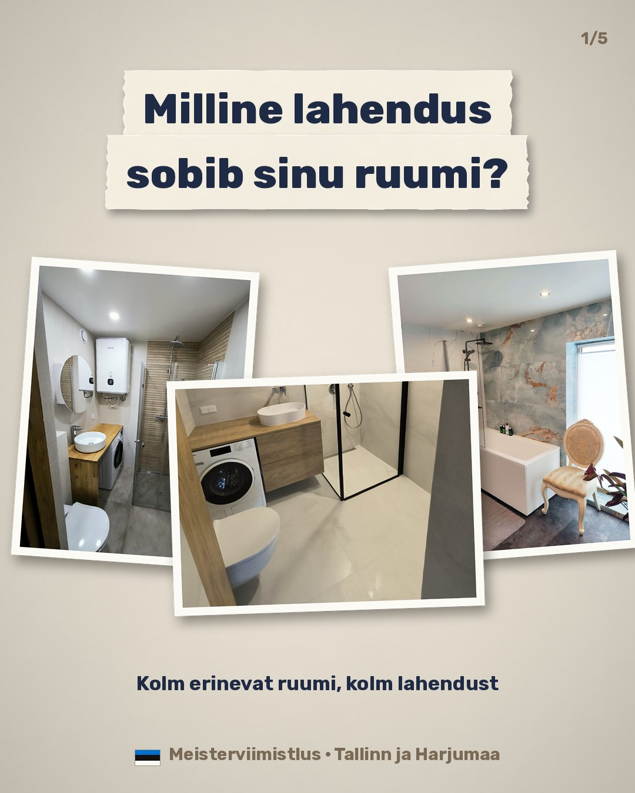
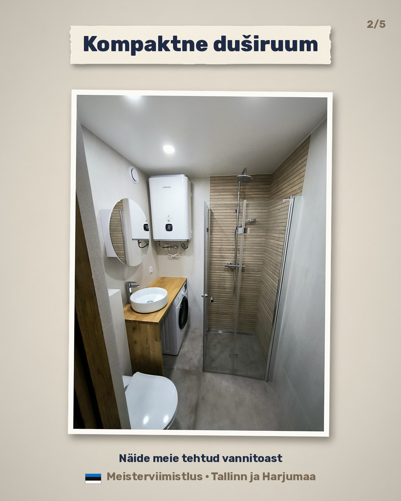
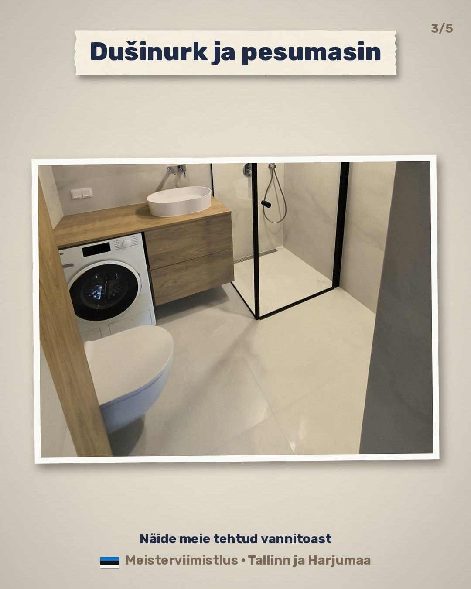
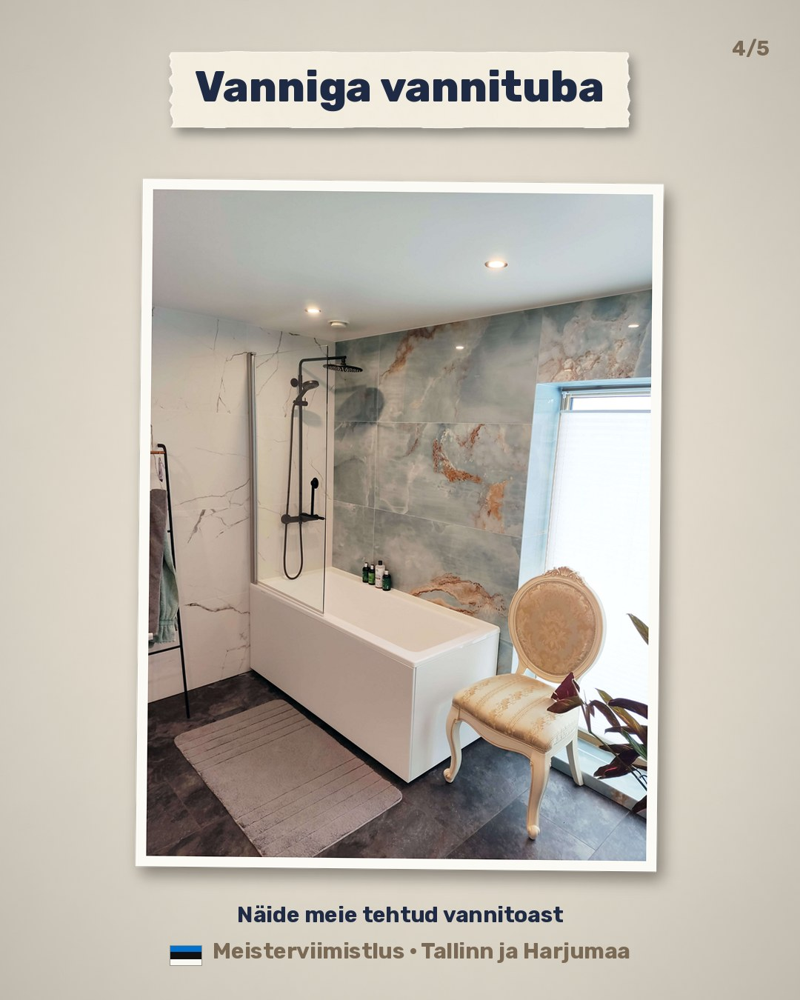
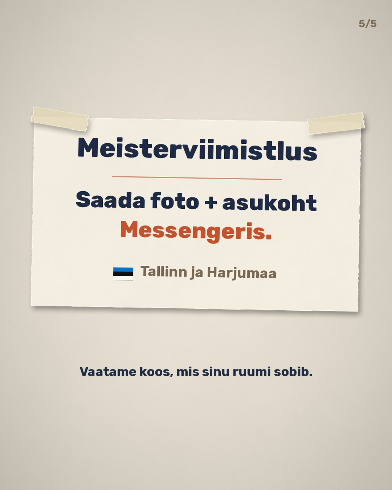

MV-C0012,0 с · 12 поз/с
Все ролики очереди MV-C на одной странице: бумажный мультик и фильмы из ваших настоящих фото и видео. Нажмите на кадр, чтобы посмотреть со звуком. Ролики ещё не запущены в рекламу.
Одобренная проба стиля с музыкой. Эстонского немного: окно со Старым Таллином на фоне и «Tallinn ja Harjumaa» на карточке.
Старая ванная, плесень под плиткой, бумажный рулон открывает новую комнату, человечек машет на прощание. В финале телефон и сайт.
Tuttav vannituba? Vahel peitub plaatide all rohkem, kui esmapilgul paistab. Meisterviimistlus – vannitoa remont Tallinnas ja Harjumaal. +372 5620 8888 · vannitoaremont.eu
Ваши фото и видео без ускорения и стабилизации, только мягкая тёплая цветокоррекция. Музыки нет: только мягкий шорох бумаги, когда въезжают таблички, фото и финальная карточка. В финале: «Saada foto + asukoht Messengeris.», флажок и «Tallinn ja Harjumaa».
Подготовка пола: смесь заливают и разравнивают по нагревательному мату. Это не гидроизоляция, и в ролике так не сказано.
See töö jääb hiljem plaadi alla, aga just siit algab korralik põrand. Kaadrid meie tööst: põrandaküttematt kaetakse seguga ja pind silutakse enne plaatimist. Tallinn ja Harjumaa. Plaanid vannitoa remonti? Saada foto + asukoht Messengeris.
Готовая ванная: стиральная машина под столешницей, душ и подсвеченная ниша. Отражения людей в зеркалах обрезаны.
Läbimõeldud igapäevaks: pesumasin valamu tööpinna all, dušinurk ja valgustatud seinanišš. Näide meie tehtud vannitoast. Tallinn ja Harjumaa. Saada foto + asukoht Messengeris – vaatame koos, mis sinu ruumi sobib.
Начало ремонта старой ванной с цветочной плиткой. Ролик кончается на демонтаже: готовый результат этой ванной не показан.
Nii algab uuendus: vana viimistlus eemaldatakse, et uus viimistlus saaks korraliku aluspinna. Kaadrid töö käigust. Tallinn ja Harjumaa. Saada foto + asukoht Messengeris.
Готовая бумажная комната как идея, рваный бумажный переход, настоящая работа и пример готовой ванной. Без «до/после».
Paberanimatsioon näitab ideed, kaadrid näitavad päris tööd. Lõpus näide meie tehtud vannitoast. Saada foto + asukoht Messengeris.
По 7,8 секунды, для рекламы, где нужен быстрый ролик.
Короткая версия MV-C01: заливка и разравнивание пола.
See töö jääb hiljem plaadi alla. Kaadrid meie tööst: põranda ettevalmistus enne plaatimist. Saada foto + asukoht Messengeris.
Короткая версия MV-C02. В подписи к посту оставьте «Näide meie tehtud vannitoast»: в самом ролике этой пометки нет.
Läbimõeldud igapäevaks: dušinurk ja valgustatud seinanišš. Näide meie tehtud vannitoast. Saada foto + asukoht Messengeris.
MV-C06: пять карточек 1080×1350, три разные комнаты, без цен. Листайте вбок. Фото P04, P02, P01; на P02 обрезано зеркало, в котором отражалась рука фотографа.





Milline lahendus sobib sinu ruumi? Kompaktne duširuum, dušinurk koos pesumasinaga või vanniga vannituba – kolm näidet meie tehtud töödest. Saada foto + asukoht Messengeris, vaatame koos.
Отдельная услуга. Подписан как пример прошлой работы, без дат, гарантий, площади и цен.
Три шага по фото случая Tuve 30: открытое основание, механическая подготовка плиты балкона, готовый пол.
Rõdu uuendus algab aluspinnast: vana kate eemaldatakse, rõduplaat valmistatakse mehaaniliselt ette ja alles siis tuleb uus põrand. Näide meie varasemast tööst. Saada foto + asukoht Messengeris.
Без этих ответов ролики можно смотреть, но запускать в рекламу рано.